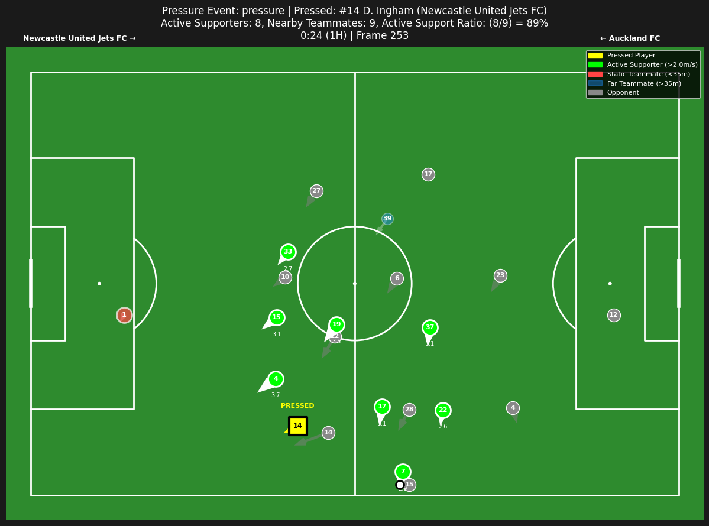
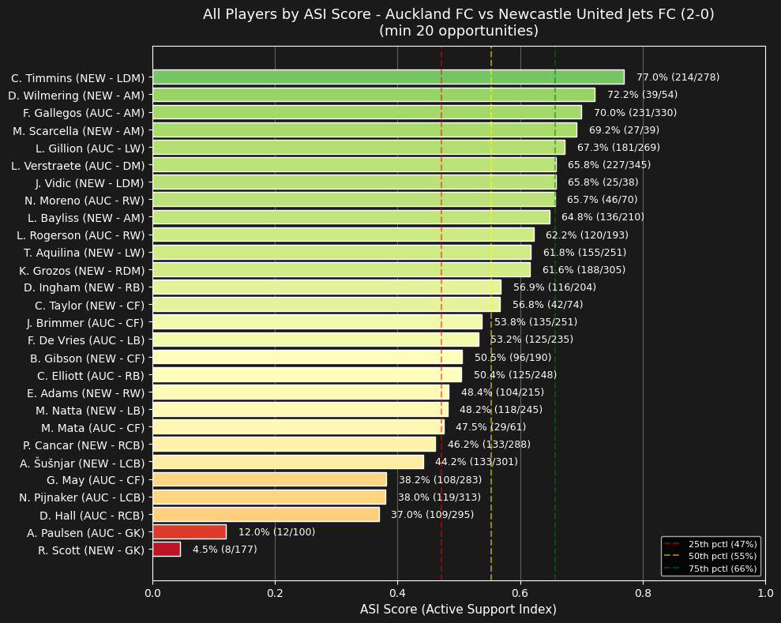
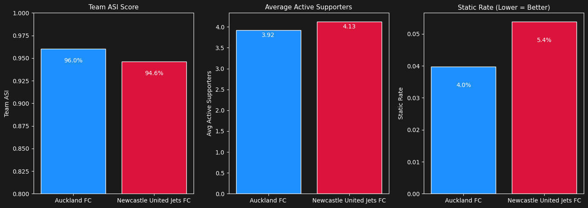
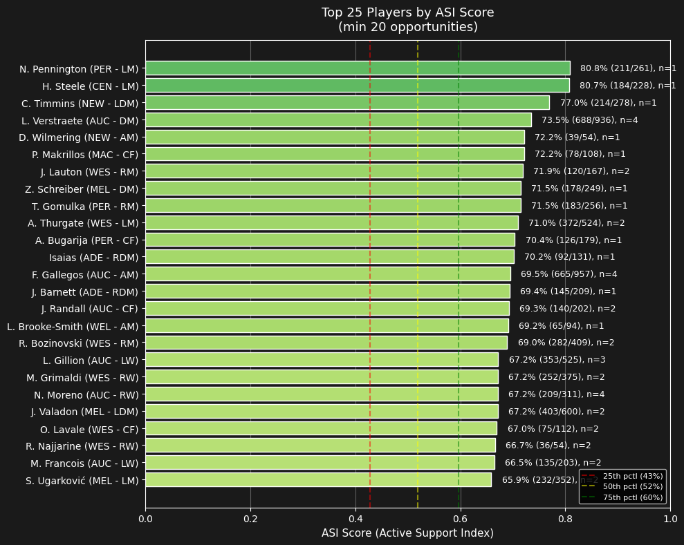
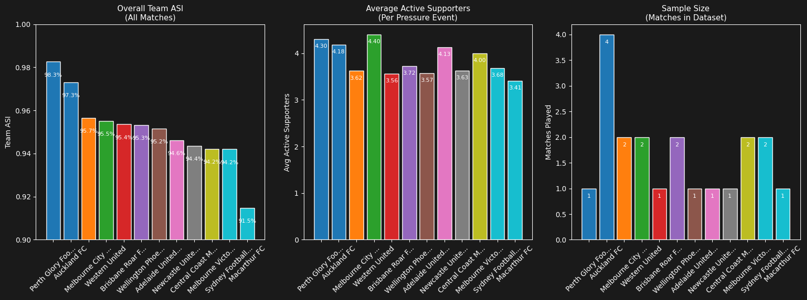
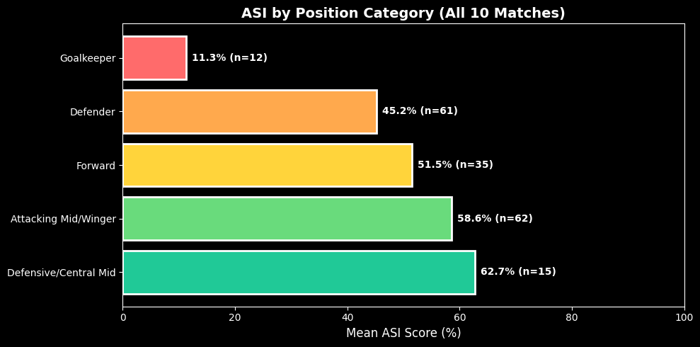
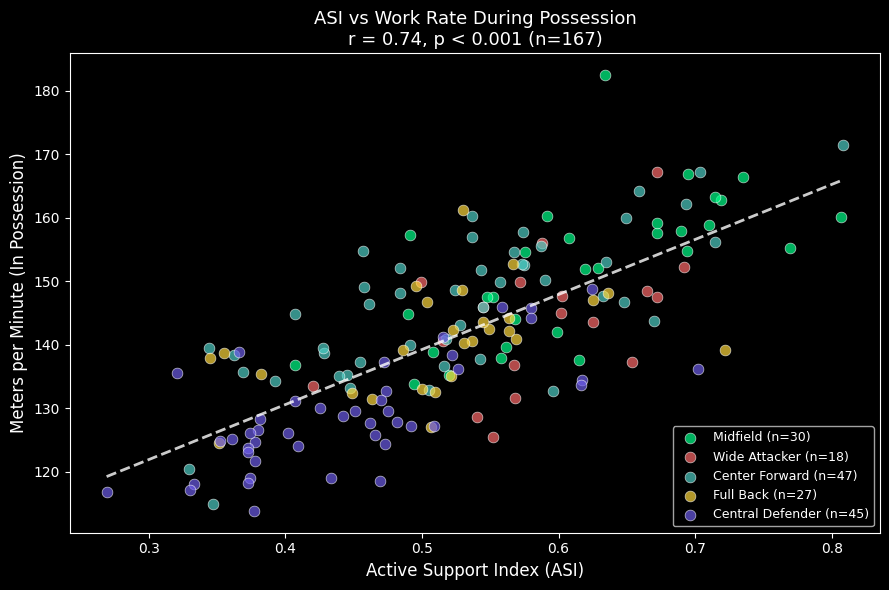
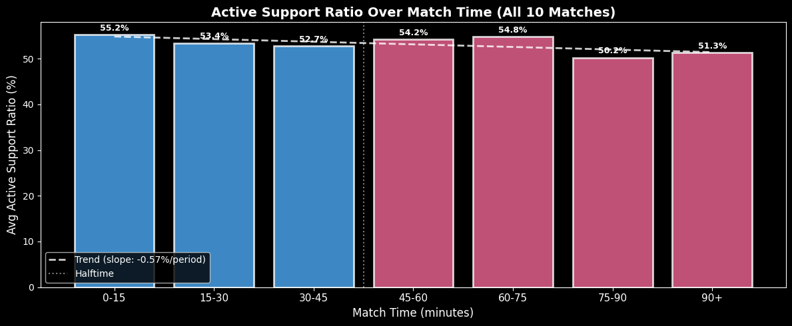
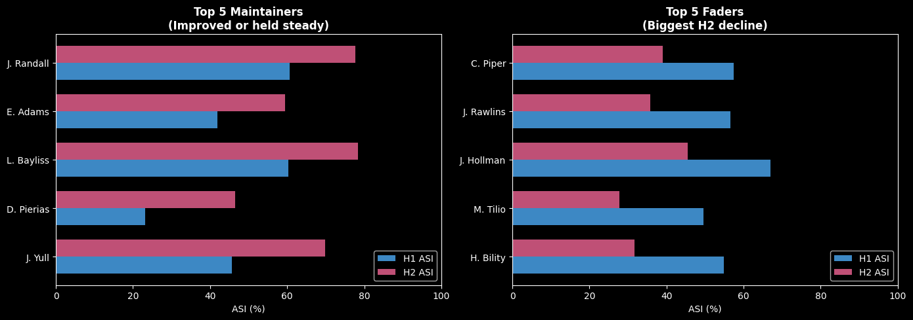

# !rm -rf temp_repo src
# !git clone https://github.com/ringhilterra/analytics_cup_research.git temp_repo
# !mv temp_repo/src .
# !rm -rf temp_repo
# !pip install mplsoccer -qIf running in Google Colab, uncomment the cell below. Skip if running locally.
The Active Support Index (ASI)
Quantifying Off-Ball Movement When It Matters Most
Author: Ryan Inghilterra
Core Question: When a player is pressured, how actively are teammates moving to provide passing options?
Metrics Framework:
| Level | Metric | Formula | Interpretation |
|---|---|---|---|
| Per Event | Active Support Ratio | \(\frac{\text{Active Supporters}}{\text{Nearby Teammates}}\) | Support quality in a single pressure moment |
| Per Player | Player ASI | \(\frac{\text{Active Support Count}}{\text{Support Opportunities}}\) | How often a player moves to support under pressure |
| Per Team | Team ASI | \(1 - \text{Static Rate}\) | Team’s off-ball movement culture |
Definitions: - Active Supporter: Teammate within 35m AND moving >2 m/s - Static Rate: Proportion of events with zero active supporters
Higher values = better off-ball support.
Validation highlights: - ASI correlates with season-level physical output (r = 0.74, p < 0.001) - ASI aligns with positional demands (midfielders 59% vs defenders 45%, p < 0.001) - Team ASI differentiates playing styles (98.3% Perth Glory to 91.5% Macarthur FC) - 58% of players show declining support in H2 (fatigue signal)
# Core imports
import pandas as pd
import matplotlib.pyplot as plt
import warnings
warnings.filterwarnings('ignore')
# Display settings
pd.set_option('display.max_columns', 20)
pd.set_option('display.width', 200)
plt.style.use('dark_background')
# src imports - core
from src import ASIDataLoader, ASICalculator
from src import fetch_match_data, process_all_matches, get_top_players_all_matches, get_team_stats_all_matches, plot_multi_match_team_comparison
from src.asi_data_loader import ASIDataLoader, print_match_summary
from src.asi_core import ASICalculator, ASIConfig
from src.asi_visualizations import ASIVisualizer
from src.nb_helper import get_detail_results_summary, team_stat_asi_summary, get_event_by_id, plot_pressure_from_event_id
# src imports - validation & analysis
from src import calculate_position_stats, plot_position_validation, test_position_significance, print_significance_result
from src import calculate_time_based_asi, get_time_bin_stats, plot_time_trend, compare_halves, print_half_comparison
from src import calculate_player_fatigue, plot_fatigue_comparison, print_fatigue_summary
from src import load_physical_aggregates, merge_asi_with_physical, calculate_physical_correlation, plot_asi_physical_correlation, print_physical_validation_summarySingle Match Analysis
MATCH_ID = 1886347 # Auckland (Home) vs Newcastle (Away) - final score: (2, 0)
# MATCH_ID = 1899585 ## <- can easily change match_idData Loading
# First fetch/download data for single match - tracking and event data from SkillCorner GitHub
fetch_match_data(MATCH_ID, verbose=True, skip_if_exists=True) # Downloads and processes match data to ./data/1886347/Match 1886347 data already exists, skipping fetch.PosixPath('data/1886347')# Load match
loader = ASIDataLoader(data_dir="./data")
match_data = loader.load_match(MATCH_ID)
# Print summary
print_match_summary(match_data)============================================================
MATCH 1886347
Auckland FC 2 - 0 Newcastle United Jets FC
------------------------------------------------------------
Tracking rows: 956,076
Event rows: 5,079
Pressure events: 773
Pitch: 104m x 68m
Validated: Yes
============================================================# show processed tracking data with velocity (speed)
display_cols = ['frame', 'team_id', 'short_name','number', 'x', 'y', 'vx', 'vy', 'speed', 'match_time_min', 'ball_x', 'ball_y', 'player_role.acronym']
match_data.tracking_df.head(3)[display_cols]| frame | team_id | short_name | number | x | y | vx | vy | speed | match_time_min | ball_x | ball_y | player_role.acronym | |
|---|---|---|---|---|---|---|---|---|---|---|---|---|---|
| 0 | 10 | 4177 | L. Verstraete | 6 | 11.70 | 6.73 | -1.242857 | -0.407143 | 1.307845 | 0.0 | 0.32 | 0.38 | DM |
| 1 | 10 | 4177 | F. Gallegos | 28 | 10.16 | -2.12 | -0.292857 | -1.042857 | 1.083197 | 0.0 | 0.32 | 0.38 | AM |
| 2 | 10 | 4177 | N. Pijnaker | 4 | 16.78 | -3.67 | 0.257143 | -0.289286 | 0.387051 | 0.0 | 0.32 | 0.38 | LCB |
match_data.events_df.iloc[:, :8].tail(3) # peak at dynamic_events| event_id | frame_start | frame_end | event_type | event_subtype | player_id | team_id | player_name | |
|---|---|---|---|---|---|---|---|---|
| 5076 | 8_998 | 58907 | 58932 | player_possession | NaN | 285188 | 4177 | A. Paulsen |
| 5077 | 7_2542 | 58907 | 58932 | passing_option | NaN | 43829 | 4177 | N. Moreno |
| 5078 | 7_2543 | 58907 | 58932 | passing_option | NaN | 163972 | 4177 | M. Mata |
Calculating ASI Per Pressure Event
Configurable Thresholds: | Parameter | Value | Rationale | |———–|——-|———–| | Proximity | 35m | Maximum realistic passing range under pressure | | Velocity | 2 m/s | Threshold separating walking (~1.4 m/s) from jogging/running |
# can adjust these values
PROX_THRESH = 35
VELOCITY_THRESH = 2
config = ASIConfig(proximity_threshold_m=PROX_THRESH, velocity_threshold_ms=VELOCITY_THRESH)
print(config.proximity_threshold_m)
print(config.velocity_threshold_ms)35
2# Calculate ASI metrics for each pressure event
calculator = ASICalculator(match_data, config=config)
results_df = calculator.process_all_pressure_events()
print(results_df.shape)(773, 17)
print("\nPressure Event Results (first 8)")
display_cols = ['frame_start', 'period', 'pressed_player_name', 'num_teammates_nearby', 'num_active_supporters', 'active_support_ratio']
results_df[display_cols].head(8)
Pressure Event Results (first 8)| frame_start | period | pressed_player_name | num_teammates_nearby | num_active_supporters | active_support_ratio | |
|---|---|---|---|---|---|---|
| 0 | 56 | 1 | A. Šušnjar | 8 | 4 | 0.5000 |
| 1 | 74 | 1 | M. Natta | 8 | 6 | 0.7500 |
| 2 | 235 | 1 | F. De Vries | 4 | 2 | 0.5000 |
| 3 | 253 | 1 | D. Ingham | 9 | 8 | 0.8889 |
| 4 | 314 | 1 | L. Gillion | 5 | 5 | 1.0000 |
| 5 | 345 | 1 | F. Gallegos | 6 | 3 | 0.5000 |
| 6 | 499 | 1 | A. Šušnjar | 7 | 0 | 0.0000 |
| 7 | 549 | 1 | F. Gallegos | 9 | 6 | 0.6667 |
Example (Row 1): A. Šušnjar under pressure - 8 teammates within 35m → 4 moving >2 m/s → Active Support Ratio = 0.50 - Half his nearby teammates were actively creating options; half were static.
# Get detailed result for a single event
detailed_results = calculator.get_detailed_results()
# Show one event in detail
event = detailed_results[1]
get_detail_results_summary(event)
Detailed Analysis - Single Pressure Event
============================================================
Event ID: 9_1
Frame: 74
Type: recovery_press
Pressed Player: M. Natta
Position: (-16.9, 20.6)
Support Metrics:
Teammates Nearby (<35m): 8
Active Supporters (>2m/s): 6
Active Support Ratio: 0.75
Teammate Details:
C. Timmins | Dist: 14.8m | Speed: 3.8 m/s | ACTIVE
D. Ingham | Dist: 56.4m | Speed: 1.6 m/s | FAR
R. Scott | Dist: 30.2m | Speed: 1.6 m/s | STATIC
A. Šušnjar | Dist: 15.9m | Speed: 3.1 m/s | ACTIVE
P. Cancar | Dist: 29.2m | Speed: 1.9 m/s | STATICPressure Moment Visualization
Visualize pressure events with active/static support color coding. Use plot_pressure_from_event_id(event_id, ...) to generate a visualization for any pressure event.
High Active Support Example
# Initialize visualizer
visualizer = ASIVisualizer(match_data)plot_pressure_from_event_id("9_3", detailed_results, match_data, loader) # frame 253, Player = D.Ingham
D. Ingham (#14, Newcastle) pressed while facing his own goal. Active Support Ratio = 0.89 — 8 of 9 nearby teammates actively moving. Only the goalkeeper was static (already open). Note #4 sprinting back at 3.7 m/s to offer a passing lane.
Low Active Support Example
plot_pressure_from_event_id("9_790", detailed_results, match_data, loader) # frame 47507, Player = L.Gillion
L. Gillion (#14, Auckland) pressed near the 18-yard box. Active Support Ratio = 0.11 — only 1 of 9 nearby teammates moving (#17 at 2.2 m/s). Most teammates were static “ball-watching” rather than creating options. This is exactly the scenario coaches want to identify and correct.
Player ASI Analysis
Calculate and rank players by their Active Support Index.
# Calculate player ASI scores
player_scores = calculator.calculate_player_asi_scores(detailed_results)
print(f"Player ASI Scores: Total players analyzed: {len(player_scores)}")
# Display top 10 with minimum 20 opportunities
top_players = player_scores[player_scores['opportunities'] >= 20].head(10)
print(f"\nTop 10 Players (min 20 opportunities):")
exclude_cols = ['player_id', 'player_number', 'match_name', 'matches_count']
top_players.drop(columns=exclude_cols).head(10)Player ASI Scores: Total players analyzed: 29
Top 10 Players (min 20 opportunities):| player_name | team_name | player_role_acronym | active_support_count | opportunities | asi_score | |
|---|---|---|---|---|---|---|
| 0 | C. Timmins | Newcastle United Jets FC | LDM | 214 | 278 | 0.7698 |
| 1 | D. Wilmering | Newcastle United Jets FC | AM | 39 | 54 | 0.7222 |
| 2 | F. Gallegos | Auckland FC | AM | 231 | 330 | 0.7000 |
| 3 | M. Scarcella | Newcastle United Jets FC | AM | 27 | 39 | 0.6923 |
| 4 | L. Gillion | Auckland FC | LW | 181 | 269 | 0.6729 |
| 5 | L. Verstraete | Auckland FC | DM | 227 | 345 | 0.6580 |
| 6 | J. Vidic | Newcastle United Jets FC | LDM | 25 | 38 | 0.6579 |
| 7 | N. Moreno | Auckland FC | RW | 46 | 70 | 0.6571 |
| 8 | L. Bayliss | Newcastle United Jets FC | AM | 136 | 210 | 0.6476 |
| 9 | L. Rogerson | Auckland FC | RW | 120 | 193 | 0.6218 |
Player ASI measures how often a player actively moves to support teammates under pressure — the proportion of support opportunities where they were moving >2 m/s.
# Player leaderboard visualization
fig = visualizer.plot_player_leaderboard(player_scores, top_n=None, min_opportunities=20, show=True)
Midfielders cluster at the top — their role demands constant movement. Defenders and goalkeepers rank lower, which is expected given their positional responsibilities. Standout: C. Timmins (LDM) leads with 77% ASI, providing active support in 214 of 278 opportunities — the most reliable off-ball mover in this match.
Team ASI Comparison
Calculate and compare Active Support Index between teams for the match.
# Calculate team-level ASI
team_stats = calculator.calculate_team_asi_scores(results_df)
# provide summary
team_stat_asi_summary(team_stats)Team ASI Comparison
============================================================
Auckland FC:
Total pressure events (when pressed): 402
Team ASI (1 - static rate): 96.0%
Static Rate (0 active supporters): 4.0%
Avg Active Supporters: 3.92
Avg Teammates Nearby: 7.49
Newcastle United Jets FC:
Total pressure events (when pressed): 371
Team ASI (1 - static rate): 94.6%
Static Rate (0 active supporters): 5.4%
Avg Active Supporters: 4.13
Avg Teammates Nearby: 7.73# Team comparison visualization
fig = visualizer.plot_team_comparison(team_stats, show=True)
| Metric | What it Measures | Interpretation |
|---|---|---|
| Team ASI | 1 - static_rate — Proportion of pressure events where at least one teammate was actively moving | Higher = Better. A team with 95% ASI means only 5% of pressure moments had zero active support. |
| Avg Active Supporters | Mean number of teammates moving >2 m/s within 35m when ball carrier is pressed | Higher = Better. More teammates in motion = more passing options and defensive support. |
| Static Rate | Proportion of pressure events where no nearby teammate was moving >2 m/s | Lower = Better. High static rate indicates teammates “ball-watching” instead of creating options. |
Quick Read: Higher Team ASI + Lower Static Rate = better off-ball support culture. Avg Active Supporters shows intensity — teams averaging 3+ are creating strong movement.
Run on all 10 matches
# Process all 10 matches (will take a couple of minutes)
results_all = process_all_matches(verbose=False)# Top 10 players across all matches
top_players_all = get_top_players_all_matches(results_all['all_player_scores'], min_opportunities=50, top_n=300)
exclude_cols = ['player_id', 'player_number', 'match_name']
top_players_all.drop(columns=exclude_cols).head(10)| player_name | team_name | player_role_acronym | active_support_count | opportunities | matches_count | asi_score | |
|---|---|---|---|---|---|---|---|
| 0 | N. Pennington | Perth Glory Football Club | LM | 211 | 261 | 1 | 0.8084 |
| 1 | H. Steele | Central Coast Mariners Football Club | LM | 184 | 228 | 1 | 0.8070 |
| 2 | C. Timmins | Newcastle United Jets FC | LDM | 214 | 278 | 1 | 0.7698 |
| 3 | L. Verstraete | Auckland FC | DM | 688 | 936 | 4 | 0.7350 |
| 4 | D. Wilmering | Newcastle United Jets FC | AM | 39 | 54 | 1 | 0.7222 |
| 5 | P. Makrillos | Macarthur FC | CF | 78 | 108 | 1 | 0.7222 |
| 6 | J. Lauton | Western United | RM | 120 | 167 | 2 | 0.7186 |
| 7 | Z. Schreiber | Melbourne City FC | DM | 178 | 249 | 1 | 0.7149 |
| 8 | T. Gomulka | Perth Glory Football Club | RM | 183 | 256 | 1 | 0.7148 |
| 9 | A. Thurgate | Western United | LM | 372 | 524 | 2 | 0.7099 |
fig = visualizer.plot_player_leaderboard(top_players_all, top_n=25, min_opportunities=20)
Wide midfielders (LM, RM) and central midfielders (DM, AM) dominate the top 25 — positions requiring constant off-ball movement. Only 2 players exceed 80% ASI: N. Pennington (80.8%) and H. Steele (80.7%), both left midfielders, marking them as elite off-ball supporters. The 75th percentile threshold (~70%) separates good from exceptional active supporters.
# Team comparison across all matches
team_summary = get_team_stats_all_matches(results_all['all_team_stats'])
team_summary| team_name | total_pressure_events | total_static_events | avg_active_supporters | avg_teammates_nearby | matches_played | overall_static_rate | overall_team_asi | |
|---|---|---|---|---|---|---|---|---|
| 0 | Perth Glory Football Club | 287 | 5 | 4.30 | 7.66 | 1 | 0.0174 | 0.9826 |
| 1 | Auckland FC | 1368 | 37 | 4.18 | 7.71 | 4 | 0.0270 | 0.9730 |
| 2 | Melbourne City FC | 828 | 36 | 3.62 | 7.22 | 2 | 0.0435 | 0.9565 |
| 3 | Western United | 647 | 29 | 4.40 | 7.60 | 2 | 0.0448 | 0.9552 |
| 4 | Brisbane Roar FC | 453 | 21 | 3.56 | 7.53 | 1 | 0.0464 | 0.9536 |
| 5 | Wellington Phoenix FC | 598 | 28 | 3.72 | 7.77 | 2 | 0.0468 | 0.9532 |
| 6 | Adelaide United Football Club | 392 | 19 | 3.57 | 7.49 | 1 | 0.0485 | 0.9515 |
| 7 | Newcastle United Jets FC | 371 | 20 | 4.13 | 7.73 | 1 | 0.0539 | 0.9461 |
| 8 | Central Coast Mariners Football Club | 266 | 15 | 3.63 | 7.39 | 1 | 0.0564 | 0.9436 |
| 9 | Melbourne Victory Football Club | 674 | 39 | 4.00 | 7.91 | 2 | 0.0579 | 0.9421 |
| 10 | Sydney Football Club | 862 | 50 | 3.68 | 7.74 | 2 | 0.0580 | 0.9420 |
| 11 | Macarthur FC | 317 | 27 | 3.41 | 7.39 | 1 | 0.0852 | 0.9148 |
fig = plot_multi_match_team_comparison(team_summary)
Perth Glory (98.3%) and Auckland (97.3%) lead in Team ASI, demonstrating strong off-ball support cultures. Macarthur FC (91.5%) shows the most room for improvement. The 7-point spread suggests ASI can differentiate team playing styles.
Validation: ASI by Position
To validate that ASI captures meaningful off-ball behavior, we examine whether positions with higher movement demands show correspondingly higher ASI scores.
# Calculate ASI stats by position category
category_stats = calculate_position_stats(top_players_all)
category_stats| mean_asi | std_asi | num_players | total_opportunities | |
|---|---|---|---|---|
| position_category | ||||
| Defensive/Central Mid | 0.627 | 0.083 | 15 | 5683 |
| Attacking Mid/Winger | 0.586 | 0.099 | 62 | 15705 |
| Forward | 0.515 | 0.101 | 35 | 9023 |
| Defender | 0.452 | 0.079 | 61 | 20367 |
| Goalkeeper | 0.113 | 0.059 | 12 | 2334 |
# Visualize ASI by position category
fig = plot_position_validation(category_stats)
# Statistical significance test
result = test_position_significance(top_players_all)
print_significance_result(result)Midfielders vs Defenders:
Midfielders mean ASI: 59.4% (n=77)
Defenders mean ASI: 45.2% (n=61)
Mann-Whitney U: 4092, p = 4.00e-14 Significant (p < 0.001)Validation Result: Position categories rank as expected — attacking midfielders and wingers show significantly higher ASI than defenders (p < 0.001). This confirms ASI captures positional movement demands rather than random variation.
Validation: Season Physical Output
Does ASI from tracking data reflect real physical effort? We validate by comparing player ASI scores (from 10 tracking matches) against season-level physical aggregates (175 matches, A-League 2024/25).
# Merge ASI scores with physical aggregates
merged_physical = merge_asi_with_physical(top_players_all, min_opportunities=50)
print(f"Players with ASI and physical data: {len(merged_physical)}")
# Calculate and display correlation
corr_stats = calculate_physical_correlation(merged_physical)
print_physical_validation_summary(corr_stats)Players with ASI and physical data: 167
Physical Aggregates Validation
==================================================
Players analyzed: 167
Pearson r: 0.739
p-value: 4.47e-30
Quartile Comparison (M/min during possession):
Low ASI (Q1): 128.8 m/min
High ASI (Q4): 153.2 m/min
Difference: +24.4 m/min (+19%)# Visualize ASI vs physical output correlation
fig = plot_asi_physical_correlation(merged_physical)
Result: ASI correlates strongly with meters per minute during possession (r = 0.74, p < 0.001). Players in the top ASI quartile cover 24 m/min more than the bottom quartile — a 19% increase in work rate. This external validation confirms ASI captures genuine physical effort: players who actively support teammates under pressure are the same players who cover the most ground when their team has possession.
Time-Based ASI Analysis
Does active support decline as the match progresses? We analyze ASI trends over 15-minute intervals to identify potential fatigue patterns.
# Calculate time-based ASI across all 10 matches
all_results_time_df = calculate_time_based_asi(loader, config)
print(f"Total pressure events with time data: {len(all_results_time_df)}")Total pressure events with time data: 7063# Calculate ASI by time bin
time_asi = get_time_bin_stats(all_results_time_df)
time_asi| avg_support_ratio | avg_active_supporters | num_events | |
|---|---|---|---|
| time_bin | |||
| 0-15 | 0.552 | 4.055 | 1283 |
| 15-30 | 0.534 | 3.784 | 990 |
| 30-45 | 0.527 | 3.770 | 1128 |
| 45-60 | 0.542 | 3.956 | 1302 |
| 60-75 | 0.548 | 3.984 | 1013 |
| 75-90 | 0.502 | 3.683 | 992 |
| 90+ | 0.513 | 3.730 | 355 |
# Visualize ASI trend over match time
fig = plot_time_trend(time_asi)
# Compare First Half vs Second Half
half_result = compare_halves(all_results_time_df)
print_half_comparison(half_result)
half_result['half_stats']
First Half vs Second Half ASI:
H1 mean: 53.7%, H2 mean: 53.1%
Mann-Whitney U: 6298558, p = 0.459 (not significant)| avg_ratio | std_ratio | avg_active | num_events | |
|---|---|---|---|---|
| half | ||||
| First Half | 0.537 | 0.303 | 3.877 | 3565 |
| Second Half | 0.531 | 0.303 | 3.872 | 3498 |
Observation: Active support ratio shows a slight downward trend within each half, with the lowest values appearing in the final 15 minutes (50.2%). However, the overall first half vs second half difference is not statistically significant (p = 0.46). This suggests fatigue-related decline in off-ball support may exist but requires larger sample sizes to confirm. The pattern warrants further investigation with more match data.
Player Fatigue Analysis
Which players maintain their off-ball support throughout the match vs those who fade? We compare each player’s ASI in the first half vs second half.
# Calculate player fatigue metrics across all 10 matches
qualified = calculate_player_fatigue(loader, config, min_opps=15)
print(f"Players with 15+ opportunities in both halves: {len(qualified)}")Players with 15+ opportunities in both halves: 151# Show top maintainers (lowest fatigue drop)
# Note: Negative fatigue_drop = H2 improvement (player increased ASI after halftime)
qualified[['player_name', 'h1_asi', 'h2_asi', 'fatigue_drop', 'total_opps']].round(3).head(10)| player_name | h1_asi | h2_asi | fatigue_drop | total_opps | |
|---|---|---|---|---|---|
| 76 | J. Yull | 0.457 | 0.699 | -0.241 | 202.0 |
| 58 | D. Pierias | 0.231 | 0.465 | -0.234 | 209.0 |
| 144 | L. Bayliss | 0.604 | 0.784 | -0.181 | 210.0 |
| 142 | E. Adams | 0.419 | 0.595 | -0.176 | 215.0 |
| 129 | J. Randall | 0.606 | 0.777 | -0.171 | 202.0 |
| 68 | H. Van Der Saag | 0.403 | 0.554 | -0.150 | 185.0 |
| 153 | M. Ruhs | 0.498 | 0.643 | -0.145 | 313.0 |
| 204 | F. Talladira | 0.403 | 0.538 | -0.135 | 233.0 |
| 193 | A. Bugarija | 0.667 | 0.800 | -0.133 | 179.0 |
| 44 | J. Brimmer | 0.525 | 0.653 | -0.128 | 661.0 |
# Visualize: Top 5 Maintainers vs Top 5 Faders
fig = plot_fatigue_comparison(qualified, top_n=5)
print_fatigue_summary(qualified)
Fatigue Analysis Summary (151 players):
Players who improved H1→H2: 63
Players who declined H1→H2: 87
Avg fatigue drop: 1.0%Key Finding: More players show declining off-ball support in the second half (58%) than improving (42%), with an average 1% drop. However, individual variation is substantial — some players significantly increase their movement after halftime (possibly “warming into” the match), while others show clear fatigue patterns. This player-level analysis could help coaches identify which players need earlier substitution or targeted conditioning work.
Impact & Use Cases
| Stakeholder | Application |
|---|---|
| Scouts | Identify “highly-active supporter” players who consistently work off-ball to support teammates under pressure |
| Coaches | Diagnose static tendencies; design training to improve support patterns |
| Analysts | Compare team playing styles; evaluate support quality by zone |
| Players | Objective feedback on off-ball contribution |
Future Improvements
- Context-aware “active support”: Account for whether a player is already open (opponent proximity). A stationary player in space may be better positioned than one running into traffic.
- Advanced support classification: Incorporate velocity direction vectors and pass opening angle calculations to distinguish between movement toward useful space versus movement away from the play.